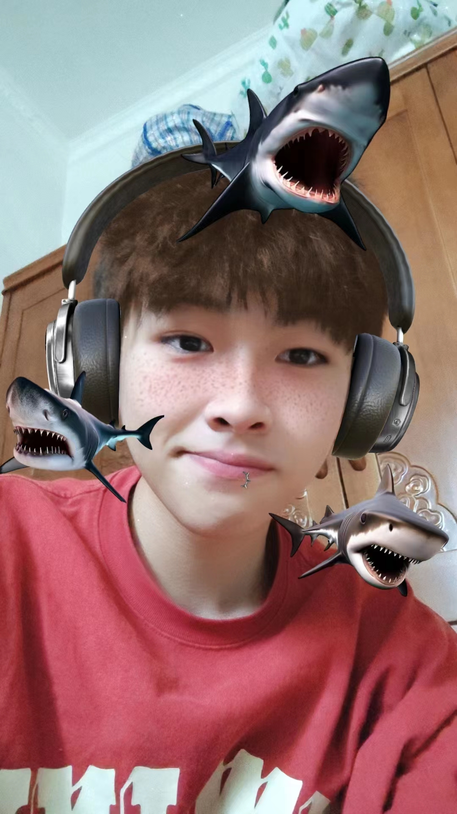

黄嘉豪，拳打张鑫，脚踢崔吃，专治各种不服，擅长王者荣耀，他的打野辅助射手对抗路，堪比全能，即使是高手张鑫，见到他也得低头，退让三分。更是 一天抢下三条风暴龙王,CF 一打四完成翻盘
 2007年9月～2011年8月 中山大学 光信息科学与技术 本科
2011年8月～2016年6月 中山大学 理论物理 博士
主要从事冷原子、光学波导等人工可控的量子体系的相关量子技术的理论研究。研究内容涉及量子精密测量、多体量子物理、光与原子相互作用、非线性物质波光学、量子调控等多个方面。
科研团队：量子工程与精密测量
电子邮箱：eqjiahao@gmail.com
通讯地址：珠海市唐家湾镇中山大学珠海校区天琴中心2415室